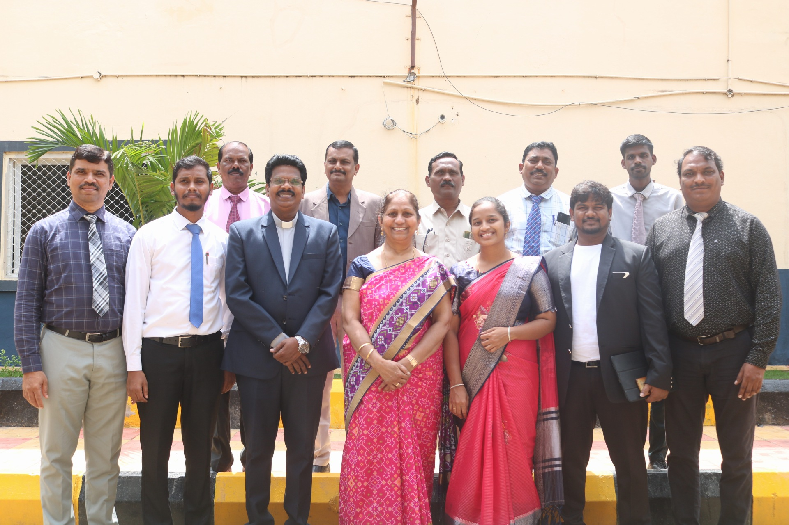
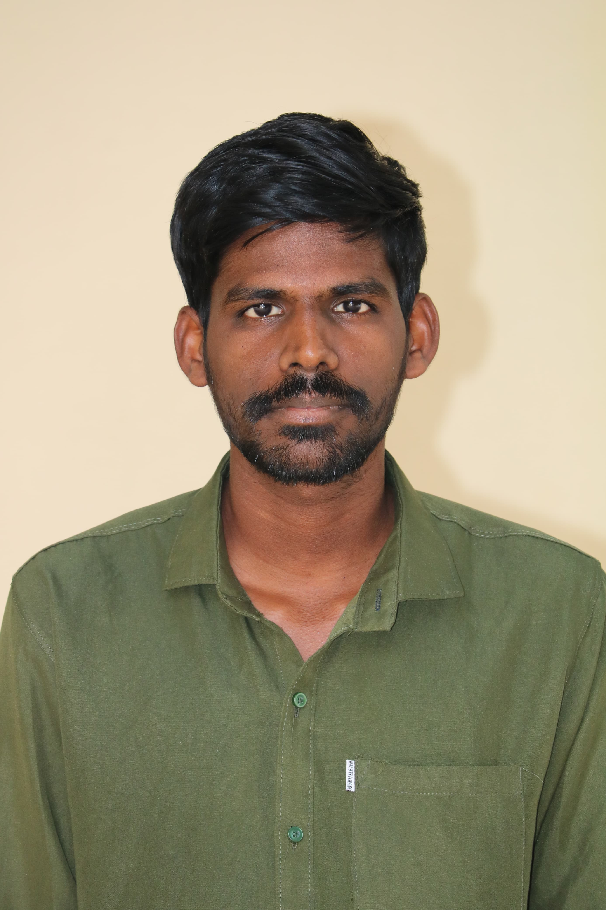
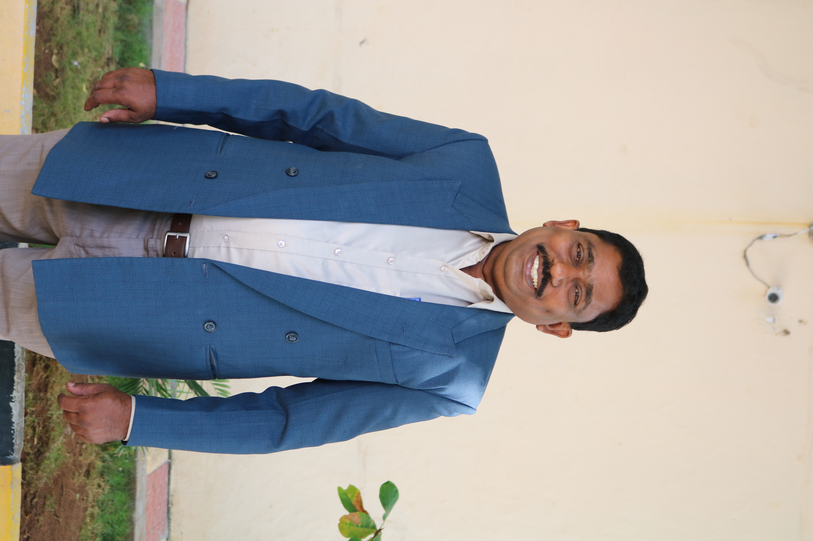
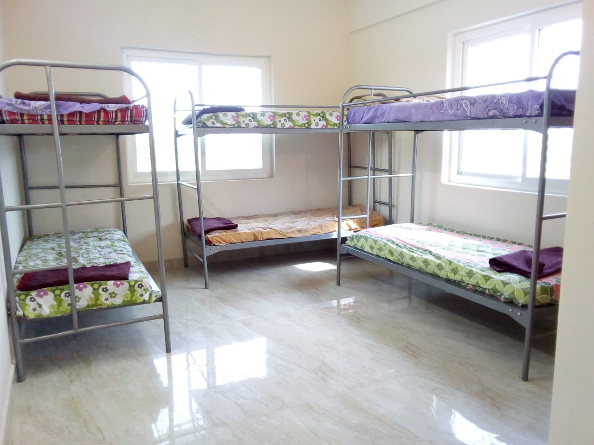
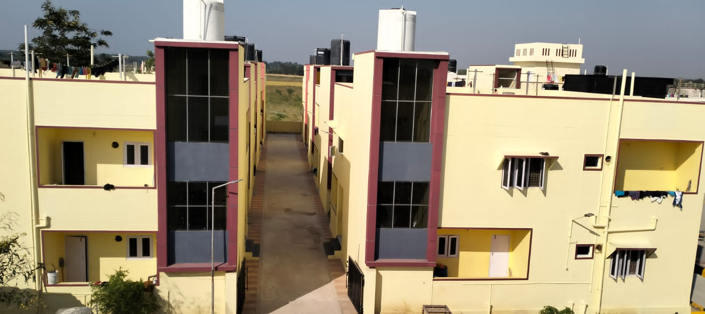
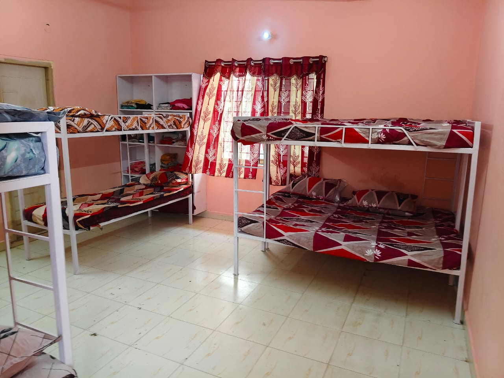
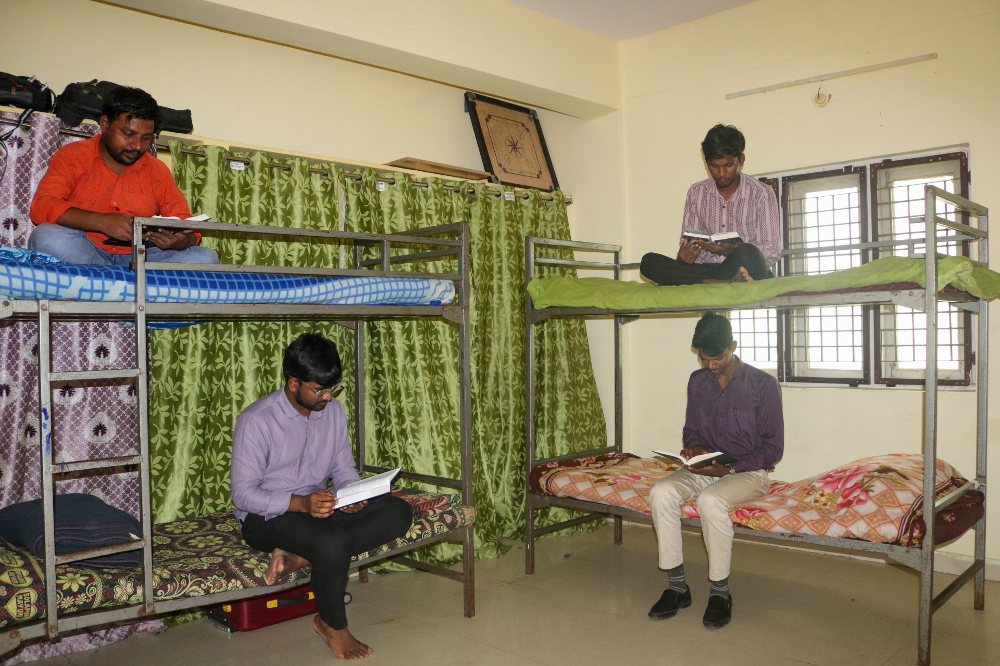
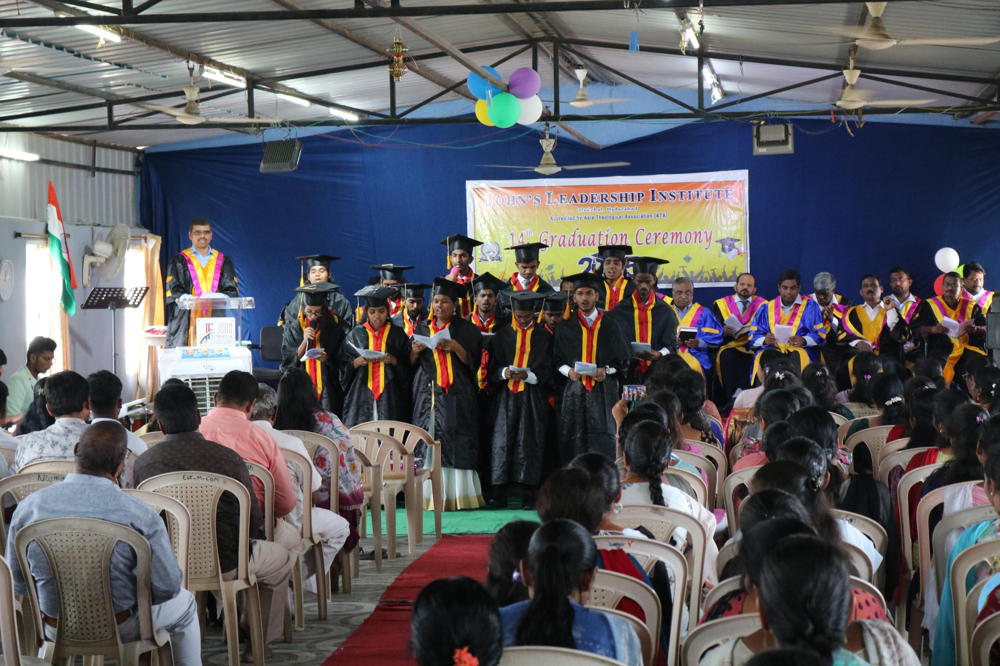

John's Leadership Institute
Hyderabad, Telangana
"Train Disciples to Make Disciples"
Matthew 28:19–20
Our Story
Rooted in Faith,
Built for Ministry
John's Leadership Institute (JLI) was born out of a simple act of obedience. In 2011, a young post-graduate student walked into our founder's office with nothing but a desire to study the Bible. With no existing Bible college, our founder, Dr. Saji K. John took a step of faith and began the Asha Church Training Program with just 12 students that year.
Over the years, the institute grew into Asha Bible College and then into John's Leadership Institute — earning full ATA accreditation in 2025. Today, JLI trains 40–50 students every year, combining rigorous academics with practical ministry, mentoring, and government-certified employable skills.
Academic Programs
Courses Offered
JLI offers ATA-accredited residential theological programs designed to equip students for church planting and ministry — all with accommodation provided on campus.
Bachelor of Theology
A comprehensive three-year program grounded in biblical studies, theology, and practical ministry. Provisional admission available for students awaiting 12th results.
Diploma in Theology
A two-year diploma in Telugu medium, accessible to students from all backgrounds who have completed 10th standard. Provisional admission available for those awaiting results.
Certificate in Theology
A one-year foundational program in Telugu, open to all students regardless of prior academic qualifications — ensuring no one is turned away from learning God's Word.
Academic Structure
Curriculum
Semester 1 — Year 1
- OT Survey
- Study Methods
- Life and Ministry of Jesus
- Basic Spirituality
- Discipleship
- English – I
Semester 2 — Year 1
- Introduction to the Bible
- World Church History
- Theology – I
- NT Survey
- Evangelism
- English – II
Semester 3 — Year 2
- History of Israel
- Indian Church History
- Major Religions in India
- Pastoral Epistles
- Hermeneutics
- Theology – II
Semester 4 — Year 2
- I & II Corinthians
- Pentateuch
- Homiletics
- Preliminary Greek
- Missionary Biographies
- Theology – III
Semester 5 — Year 3
- Romans & Galatians
- Cults & Heresies
- Christian Ethics
- Pastoral Care & Counselling
- Apocalyptic Literature
- Intertestamental Period
Semester 6 — Year 3
- Hebrews & General Epistles
- Wisdom Literature
- Church Planting & Growth
- Christian Marriage & Family
- MRSM
- Church Administration & Leadership
Grading System
Semester 1 — Year 1
- OT Survey
- Study Methods
- Life and Ministry of Jesus
- Basic Spirituality
- Discipleship
- English – I
Semester 2 — Year 1
- Introduction to the Bible
- World Church History
- Theology – I
- NT Survey
- Evangelism
- English – II
Semester 3 — Year 2
- History of Israel
- Indian Church History
- Major Religions in India
- Pastoral Epistles
- Hermeneutics
- Theology – II
Semester 4 — Year 2
- I & II Corinthians
- Pentateuch
- Homiletics
- Preliminary Greek
- Missionary Biographies
- Theology – III
Grading System
Semester 1 — Year 1
- OT Survey
- Study Methods
- Life and Ministry of Jesus
- Basic Spirituality
- Discipleship
- English – I
Semester 2 — Year 1
- Introduction to the Bible
- World Church History
- Theology – I
- NT Survey
- Evangelism
- English – II
Grading System
Our Team
Faculty and Staff

Mrs. Cynthia John
Rev. Dr. Karra Nehemiah
Rev. Prabhakar Malladi
Pr. B. Paul Prabhakar
Rev. L. Bharath
Pr. S. Deva Prakash

Koda Anand

Mrs. L. Glory Bharath
Rev. M. Venu Gopal
Rev. T. Rajendra Prasad
Rev. Dr. B. Mark

Rev. Dr. M. William Carey
Resources
JLI Library
The JLI Library is the backbone of the educational system — the place where students deepen their knowledge through reading and research. It houses one of the most comprehensive theological collections in the region.
The library's digital system — Logos Library — is a computerized lab with internet connectivity. The Koha software provides a keyword-focused catalogue search for easy access to any research material.
Strong base in Theology, Biblical Studies, Religion, Church History, Counselling, Mission, and more.


Serving & Outreach
Practical Ministry
Practical ministry is a compulsory part of every program at JLI. Students participate in approved local church ministries, outreach, and mentoring groups under the guidance of experienced pastors.
Sundays are dedicated to Worship & Outreach — giving students hands-on experience in evangelism, discipleship, and community engagement from their very first year.
Student Life
Campus Life
Accommodation & Facilities
- Spacious, well-ventilated rooms with separate hostels for boys and girls
- Hygienic dining hall with nutritious food
- Security staff and CCTV surveillance
- Medical assistance on campus
- Spacious grounds for games and sports
- Digital classrooms and music team facilities
- Super Market available on campus for all basic needs




Dining & Nutrition
Sports & Recreation
Classrooms


Graduation Ceremonies

Alumni Voices
What Our Graduates Say
My time at JLI transformed not only my understanding of Scripture but also my walk with Christ. I am grateful for the knowledge, spiritual guidance, and ministry training I received.
JLI changed the way I see ministry and people. The Word of God, daily devotions, fellowship in the hostel, and guidance from the faculty shaped me into a more disciplined servant-leader and gave me a deeper passion for winning souls for Christ.
JLI prepared me not only to understand God's Word but also to become a servant leader in ministry. Through daily devotions, practical training, caring faculty, and hostel fellowship, God gave me a deeper burden for lost souls and a passion to reach people with the Gospel.
The years I spent in JLI gave me memories and lessons I will carry for a lifetime. The peaceful accommodation, powerful devotional life, knowledgeable faculty, and practical classroom teaching prepared me for ministry and life.
JLI gave me a beautiful community to live with, learn with, and grow with. The caring faculty, enriching classes, devotional life, and hostel fellowship made my college experience both academically meaningful and spiritually transformative.
Vocational Training
Employable Skill Training
In addition to theological training, JLI offers Government-Certified Employable Skill Training (EST) in 20 disciplines. These courses help students connect meaningfully with local communities and sustain themselves financially in long-term ministry.
Join JLI
Admissions & Statement of Faith
Statement of Faith
- Bible: The sixty-six canonical books as verbally and plenary inspired, infallible Words of God.
- God: One personal God eternally existent in a trinity of persons — Father, Son, and Holy Spirit — active in creation, providence, and redemption.
- Jesus Christ: Fully God and fully human, born of the Virgin Mary, died as a substitutionary sacrifice, rose from the dead, and will return in power and glory.
- Holy Spirit: God who convicts, regenerates, and indwells believers, enabling holy living, witness, and service. We believe in the Gifts and Fruit of the Holy Spirit.
- Man: Created in God's image; fallen through transgression. Salvation comes only through belief in the death of Jesus Christ.
How to Apply
We welcome applicants who are passionate about church planting and serving God's Kingdom. Provisional admission is available for students awaiting results.
Get in Touch
Contact Us
Near Shantha Biotechnics Ltd,
Opposite Vignan School, Athvelly,
Medchal (Dist), Hyderabad,
Telangana – 501401